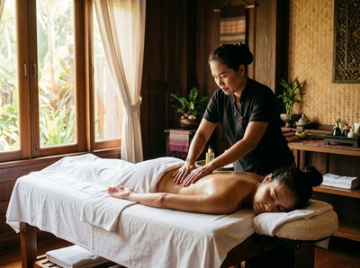

Your body gives you warning signs before things go wrong: persistent tightness in a hamstring, a shoulder that catches on certain movements, a lower back that aches after every run.
These are not problems to train through. They are signals that your soft tissue needs attention. Ignoring them is one of the most reliable routes to a real injury.
Massage for injury prevention addresses those warning signs directly. It keeps muscles, tendons, and connective tissue in the condition they need to cope with the demands you place on them.
A sports injury, as outlined in NHS guidance on sports injuries, occurs when physical activity damages muscles, tendons, ligaments, or joints. Common examples include sprains, strains, tendon problems, and stress fractures. They affect people at every level — from competitive athletes to those who exercise regularly for their health.

Most soft tissue injuries share a root cause: too much stress on tissue that has not had enough time or support to recover. Muscle imbalances, limited range of motion, and old tension from previous activity all raise the risk.
Injury prevention is not simply about warming up properly. It is about keeping your body healthy between sessions.
Massage works on the things that lead to injury — before injury happens. It improves blood flow to muscles and connective tissue. That brings oxygen and nutrients that keep soft tissue healthy and supple.
Less muscle tension means less strain on tendons. It also means less load on joints when you move.
A systematic review of sports massage published in PMC found that massage produces a small but real gain in flexibility compared with no treatment. It also reduces delayed onset muscle soreness. Both outcomes cut injury risk.
Flexible tissue handles sudden load better. Muscles that recover fully between sessions are more resilient. You can book your session online to start building that resilience.
At Glasgow Thai Massage, the treatments most useful for injury prevention are Thai sports massage and traditional Thai massage. Thai sports massage is built around recovery and performance.
Traditional Thai massage combines assisted stretching, acupressure, and work along the body's energy lines. It improves joint mobility and releases tension across the whole body.
A session focused on injury prevention starts with a conversation. We ask about your activity level, where you carry recurring tightness, and what you are training for. From there, the treatment is shaped around your body's specific needs.
Maliwan and Jariya both trained at the Wat Pho Thai Massage School in Bangkok. They bring real skill to spotting where tension is building and why.
If you are following a sport or training programme, Thai sports massage will work into the muscle groups under most load. It releases trigger points and corrects imbalances before they become problems.
Traditional Thai massage takes a whole-body approach. Assisted stretching and acupressure restore range of motion and ease restriction across multiple areas in one session.
Both treatments are available at our studio at Victoria Chambers, 142 West Nile Street, Glasgow city centre. Book a treatment online and let us know what you are working on.
Anyone who places repeated physical demands on their body stands to benefit. This includes runners, cyclists, swimmers, and gym-goers following progressive training plans.
It also includes people whose work involves physical labour, repetitive movements, or fixed postures — construction workers, nurses, warehouse staff, and desk workers whose postural strain builds just as quietly as any training load.
If you are returning to exercise after a break, or have a history of recurring strains in the same area, booking regular sessions with Glasgow Thai Massage is one of the most practical steps you can take to stay active without setback.
Massage plays a real preventive role. It improves flexibility, reduces muscle tension, and supports blood flow to soft tissue. These changes address the conditions that make injury more likely.
Research in peer-reviewed sports science shows that massage improves range of motion and reduces delayed onset muscle soreness. Both outcomes lower the risk of strain and tissue breakdown during activity.
For most active people, a session every two to four weeks provides a solid maintenance benefit. Those in heavy training blocks, or with a history of recurring injury in one area, may benefit from more frequent sessions during peak load periods.
Your therapist can suggest a schedule based on your activity and how your body responds.
Both are effective. The right choice depends on what you need. Thai sports massage targets specific muscle groups under load and suits athletes and active people with particular areas of concern.
Traditional Thai massage takes a full-body approach using assisted stretching and acupressure. It is especially useful for overall mobility, postural balance, and whole-body maintenance. Many clients benefit from alternating between the two.
Both have a role. A lighter session before exercise can improve flexibility and prepare tissue for load. Post-exercise massage supports recovery by reducing soreness and helping muscles return to their resting state more quickly.
For injury prevention as an ongoing goal, regular sessions matter more than the exact timing of when you book them.
Yes. Most soft tissue injuries do not happen to professional athletes. They happen to people who walk, garden, carry children, sit at desks for long periods, or exercise occasionally without enough recovery time.
Muscle tension, restricted movement, and postural imbalance are not exclusive to sport. Anyone who uses their body regularly — which is everyone — can benefit from the kind of upkeep that massage provides.
Massage is not suitable directly over an acute injury, an area of infection, or a deep vein thrombosis. If you have a recent fracture, open wound, or have been told by a GP to avoid massage in a specific area, let your therapist know before the session.
Outside of these situations, massage is safe for most people and can be adapted to work around existing conditions.